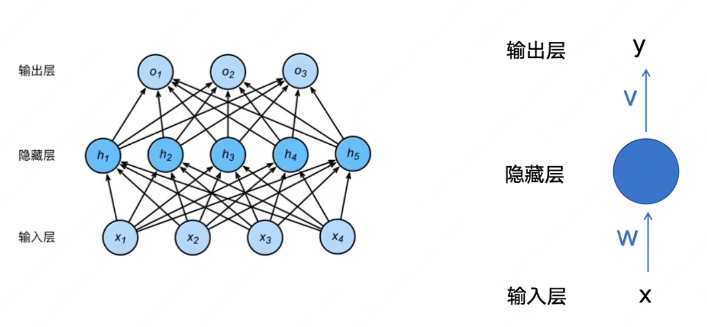
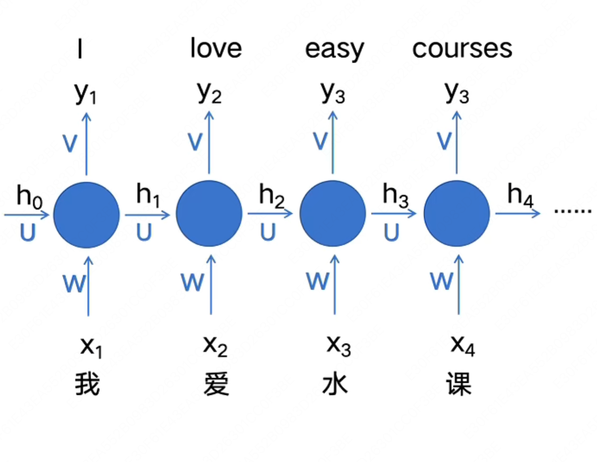
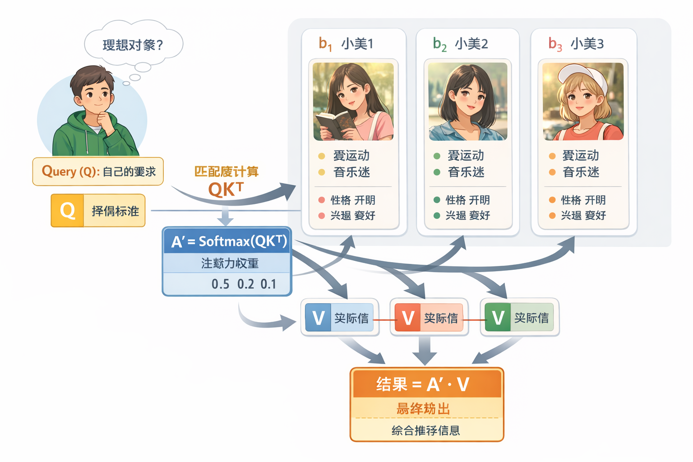
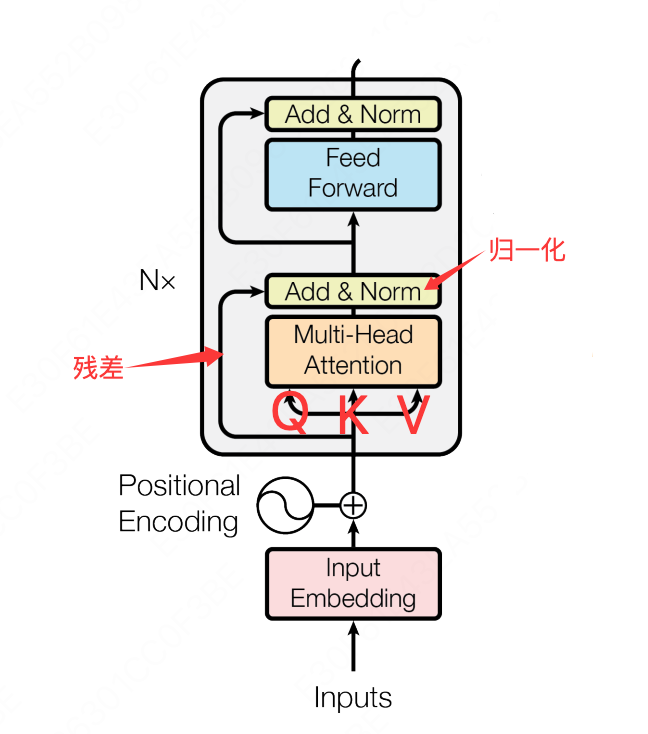
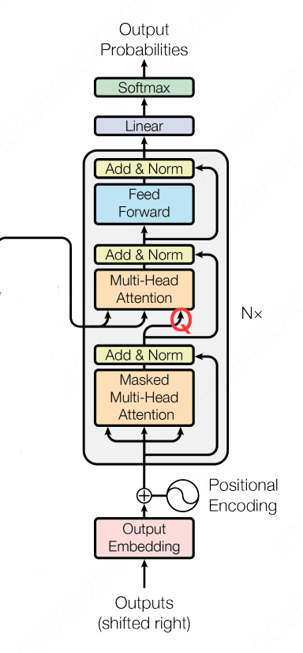

Deep Learning
学习资源：
LLM 视频：
Deep Learning
FNN
Feedforward Neural Network，前馈神经网络，也是最简单的神经网络
模型结构如下图所示：

如果我们想要用它作为一个序列转导模型(Sequence Transduction Model)来解决序列转导问题，它是不合适的，原因有以下几点：
-
从输入层来看，它的输入是固定的，每输入一个token，就会直接产生一个结果，显然是不合适的，只能产生所谓的等长结果
-
完全丢弃了句子中词语的顺序信息
RNN
Recurrent Neural Network, 循环神经网络的出现就是为了解决 FNN 中出现的序列转导问题
首先我们来尝试改造之前的 FNN，来将输入句子中词语的信息也编码进模型里，那么很容易想到，我们可以将上一个时间步 $t - 1$ 计算得到的中间输出 $h_{t - 1}$ 也传递给下一个时间步 $t$。那么再下一个时间步 $t$ 计算时，就可以像人一样分析前面出现的词语了
我们来举例说明，如果我们的输入是"我爱水课"，那么计算过程如下：

也就是：
$h_t = f(W x_t + U h_{t - 1})$
$y_t = g(Vh_t)$
其中：
- $x_t$: $t$ 时间步的输入
- $h_t$: $t$ 时间步的隐藏状态
- $y_t$: $t$ 时间步的输出
- $W,U,V$: 权重矩阵
- $h_t$中的 $f$: 激活函数,如 ReLU, Sigmoid, 用于引入非线性
- $y_t$中的 $g$: 视任务而定，用来将输出转换为我们想要的结果
很好，但是现在还有一个问题尚未解决，输入和输出不等长的时候怎么办？
那么我们显然不能在每个时间步 $t$ 都固定进行一次输出，而应该将输入和输出分开来，也就是在所有输入都计算完成后，再统一进行输出。
这就是大名鼎鼎的 Encoder 和 Decoder 架构：

这里的 $C$ 就是所谓的“上下文向量”
现在我们来看 RNN 似乎已经够完美了，但是依旧还有三个问题困扰着人们：
- 我们来看隐藏状态 $h_1$，它在产生 $C$ 的时候已经被计算了好多次了，随着序列长度的增加，它所携带的信息素会被稀释的越来越少，这也就是我们经常说的模型在处理长序列时出现的“遗忘”问题。
- 对于每一个输出来说，不同时间步的隐藏状态 $h_i$ 对它来说意义显然不一样，比如“我爱水课”中的“水”，很明显对于“课”这个词应该非常关注，而不是现在这样笼统的进行同等对待的输入，而是应该类似于 $s_2=0.1h_1+0.1h_2+0.2h_3+0.6h_4$
- Encoder 和 Decoder 中都是串行化计算，无法并行，限制了模型进一步发展
对于上述问题，人们提出了 Attention Mechanism(注意力机制)：

比如对于“我爱水课”中的”水“，它明显对"课"这个字有更高的关注度，因此它的输入中对 $h_4$ 的关注度明显大于 $h_1$，$h_2$，因此我们可以让模型在训练中学习到 $C_2 = 0.1h_1+0.1h_2+0.3h_3+0.5h_4$。
这样对于距离它很远的词，它也可以通过给它一个很大的权重，来解决遗忘问题。
因此上面的问题1 和问题 2 的问题都解决了，现在只剩下一个问题了，那就是如何并行计算？
虽然也有很多人在使用 CNN 来改造 Encoder 来达到并行计算的目的，但是又重新带来了远距离遗忘问题，要想彻底解决这个问题，就得等到 2017 年 Transformer 的横空出世了
Transformer
谷歌在 2017 年发表了一篇划时代的论文： Attention Is All You Need(论文原文以及翻译在这)
论文中提到了一种全新的模型：Transformer，它完全抛弃了 RNN 或者 CNN 的序列建模方式，完全基础自注意力机制，模型结构如下图所示：

直接看上面的图，肯定会两眼一黑，这画的都是个啥啊？？？
我们来慢慢分析，你就能理解为什么会这样设计了，以及怎么想到这么设计的？
首先我们来看看 RNN 还会有串行化的问题呢？就在于我们在解决 FNN 中句子中词语的位置信息问题时，采用了一种暴力方式，让当前时间步 $t$ 的输出依赖于上一个时间步 $t - 1$ 的隐藏状态 $h_{t - 1}$，而不是只依赖于当前输入 $x_t$。这种方法确实在一定意义上解决了位置信息的问题，但是后来又带来了远距离遗忘问题。
这时候我们会发现，能不能把这个输入的位置信息也硬编码进输入里面呢？这样我们就可以不用依赖上一个时间步的隐藏状态了，而同时计算每一个输入的输出了。恭喜你发明了 PE(Positional Encoding, 位置编码):
$$ \begin{align*} PE_{(pos,2i)} &= \sin\left(\frac{pos}{10000^{\frac{2i}{d_{model}}}}\right) \\ PE_{(pos,2i+1)} &= \cos\left(\frac{pos}{10000^{\frac{2i}{d_{model}}}}\right) \end{align*} $$这种位置编码的好处涉及到傅立叶变换等相关知识，这里先不赘述了。以及中国的苏剑林老师提出了 RoPE（旋转位置编码），优化了 Transformer 论文中原版的位置编码，被 ChatGPT 等现在主流大模型直接采用。
有了上面的位置编码，我们就可以完全抛开之前 RNN 的循环结构了，转为设计一种更加优雅的自注意力机制，我们叫他缩放点积注意力(Scaled Dot-Product Attention)。
我们首先假设我们的输入是 $n$ 个 token 组成的序列 $x_1, x_2, ..., x_n$，每个 token 都会被 embedding 成一个 $d_{model}$ 维的向量，再和位置编码 PE 进行相加，得到最后的输入矩阵是 $X \in \mathbb{R}^{n \times d_{model}}$。模型在训练的时候，实际上就是在训练模型中的权重矩阵 $W_Q, W_K, W_V \in \mathbb{R}^{d_{model} \times d_k}$，这些权重矩阵会将我们的输入 $X$ 映射到 $d_k$ 维的空间中。
输入矩阵 $X \in \mathbb{R}^{n \times d_{model}}$，分别和 $W_Q, W_K, W_V \in \mathbb{R}^{d_{model} \times d_k}$ 相乘得到矩阵 $Q, K, V \in \mathbb{R}^{n \times d_k}$。
其中:
- $Q$：由查询向量 $\overrightarrow {Q_i}$ 组成的查询矩阵。通过使用一个查询投影矩阵 $W_Q$ 乘以嵌入向量 $\overrightarrow {E_i}$ 得到查询向量 $\overrightarrow {Q_i}$。
- $K$：由键向量 $\overrightarrow {K_i}$ 组成的键矩阵。通过使用一个键投影矩阵 $W_K$ 乘以嵌入向量 $\overrightarrow {E_i}$ 得到键向量 $\overrightarrow {K_i}$。
- $V$：由值向量 $\overrightarrow {V_i}$ 组成的值矩阵。通过使用一个值投影矩阵 $W_V$ 乘以嵌入向量 $\overrightarrow {E_i}$ 得到值向量 $\overrightarrow {V_i}$。
要想理解这里的矩阵 $Q, K, V$，我们先来举个例子来形象化的理解它们分别的作用：
假设有一个男生叫小帅，他想找对象，于是打开了交友软件。软件上有许多个女生 $b_1, b_2, b_3, \dots$ 也在寻找对象。小帅希望找出哪些女生最符合自己的要求，这样他就可以把更多注意力放在最合适的人身上。那么他可以这样做：

- 小帅首先需要发布自己的择偶标准，就是 Query($Q$);
- 每个人都需要在主页上标明自己符合哪些条件（包括小帅自己），这就是 Key($K$);
- 每个人还需要写清楚自己所有的的实际信息，这就是 Value($V$);
- 小帅用自己的要求 $Q$ 去和每个女生的 $K$ 做匹配，计算匹配程度（点积，即 $QK^T$），然后乘以缩放因子$\frac{1}{\sqrt{d_k}}$（这里是为了将点积后的结果变得更方便后续计算，实践中我们发现点积缩放后注意力速度更快、更节省空间），再用 Softmax 将匹配度归一化，得到注意力权重，这样就知道应该重点关注哪些女生；
- 注意力权重矩阵 $A' = \text{Softmax}(QK^T)$ 只是表示匹配程度，例如 $0.5, 0.2, 0.1 \dots$。但是仅有权重还不够，最终还需要获取具体信息，所以要用注意力权重去加权 Value ($V$)，得到最终的输出结果。
所以最终的缩放点积注意力机制计算可表示为：
$$ \text{Attention}(Q, K, V) = \text{softmax}\left(\frac{QK^T}{\sqrt{d_k}}\right)V $$现在我们再来看看上面 Transformer 架构图上的 Encoder 部分：

这里的多头注意力模块是不是和我们上面设计的缩放点积注意力一样，所以图中部分有三个输入，分别对应去计算 $Q, K, V$。
论文中的编码器由 $N = 6$ 个相同的层堆栈组成，每一层有两个子层。第一个是多头自注意力机制，第二个是一个简单、位置感知的全连接前馈网络。在每个子层周围使用残差连接，然后进行层归一化。
Q. 那么多头注意力机制的“多头”到底体现在哪里呢？
A. 我们上面知道我们的输入矩阵 $X \in \mathbb{R}^{n \times d_{model}}$ ，而 $Q, K, V \in \mathbb{R}^{n \times d_k}$，最后的缩放点积注意力机制计算得到的结果 $\text{Attention}(Q, K, V) \in \mathbb{R}^{n \times d_k}$。但是为了方便计算，统一中间每一层的结果维度，我们会让每一层计算得到的结果和输入的维度一致，因此我们还需要将单个缩放点积注意力机制得到的结果进行一些处理，来得到和输入矩阵 $X$ 维度相同的输出结果。
最简单的方式就是使用和 $d_{model}$ 维度相同的矩阵 $W_Q, W_K, W_V$,即 $d_k = d_{model}$,也就是 $W_Q, W_K, W_V \in \mathbb{R}^{d_{model} \times d_{model}}$，这样我们的矩阵 $Q, K, V \in \mathbb{R}^{n \times d_{model}}$，最后计算得到的结果 $\text{Attention}(Q, K, V) \in \mathbb{R}^{n \times d_{model}}$。
但是实践发现，与其使用具有 $d_{model}$ 维的 $K, Q, V$ 的单个注意力函数，不如将它们线性投影 $h$ 次，分别映射到 $d_k, d_k, d_v$ 维，这样效果要好得多。
也就是 $Q, K \in \mathbb{R}^{n \times d_k}，V \in \mathbb{R}^{n \times d_v}$，最后计算得到的结果 $\text{Attention}(Q, K, V) \in \mathbb{R}^{n \times d_{v}}$，最后我们再将这 $h$ 个 $\mathbb{R}^{n \times d_{v}}$ 结果通过一个线性层进行升维，也就是投影到 $d_{model}$ 维，这样结果又变回了我们想要的 $\mathbb{R}^{n \times d_{model}}$。
多头注意力块展开也就是长成这样：

这里使用多个注意力头也很好理解，因为可以让每个注意力头，注意到不同的部分。还拿之前的例子来举例，一部分注意力头会更关注女生外表信息，比如身高，体重，气质等，另一个注意力头更关注女生的性格。这样在大数据训练下，模型的每一个注意力头可以更加专业，更加聚焦。
下面我们再来看看 Decoder 部分：

Decoder 部分和 RNN 很像，也是一种自回归生成 → 上一步输出的 token 作为下一步输入
-
推理阶段（生成）
-
我们要生成一句话：$y_1, y_2, …, y_n$
-
第一步输入：通常是一个
<BOS>token（句子开始符） -
每一步生成的 $y_t$ → 作为下一步 Decoder 生成 $y_{t+1}$ 的输入
-
这里依旧是一个串行化计算，这个也符合人类，说话时一个字一个字的说
-
-
训练阶段
-
已知目标序列 $Y = [y_1, …, y_n]$ (也就是我们的训练数据)
-
Encoder输入：源语言序列 $X$（如英文）
-
Decoder输入：目标语言序列 $Y$ 左移一位（例如中文，左移一位 +
<BOS>） -
目标输出：目标语言序列 $Y$
-
假设训练文本是一个句子：$X =$ “我爱水课”, 那么 Encoder 中就是 “我爱水课”，Decoder 中就是 “<BOS>I love easy”，预期输出就是"I love easy courses"
-
这里的左移一位是为了让模型学习预测“下一个 token”
Masked Attention 保证每个位置只能看到自己和前面的 token，而不能偷看后面的答案(token)。本质上就是将之前计算得到的 $QK^T$ 矩阵加上一个下三角掩码矩阵（矩阵上三角注意力设置为负无穷大，其余都是0，这样那部分经过 Softmax 后就变成 0），该位置不会关注未来 token 的 Value
至于为什么 Decoder 需要 Masked Attention，而 Encoder 中不需要呢？这就在于两部分的分工是不一样的。
- Encoder 的任务是理解整个输入序列
- 每个 token 都可以参考序列中的所有 token，包括后面的 token
- 因此 Encoder 可以使用 完整的自注意力，不需要 Mask
- Decoder 的任务是自回归生成目标序列
- 预测下一个 token
- 只能依赖已生成的 token → 需要 Mask 保证未来信息不泄露
最后六层堆叠起来的样子是这样的：

现在我们再来回头看看 Transformer 架构是如何解决串行化问题的？
把 RNN 的串行递推彻底去掉，改用矩阵乘法一次性计算所有位置的注意力，这正是 $QK^T$ 矩阵乘法的意义。而不是每一个 token 并行计算，通过矩阵乘法就能自然的进行矩阵分块来实现并行计算。